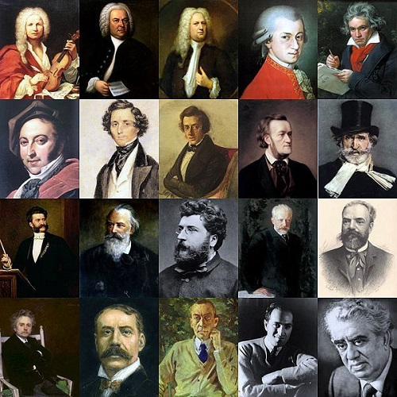

The Classical Station (89.5 FM)
"Bringing you the best classical hits in the Northeast."
Home
Schedule
Events
Composers
Glossary
Register
Contact
Composers:
Main Menu
Renaissance
1400-1600
Giovanni Pierluigi Da Palestrina
Baroque Period
1600-1750
Johann Sebastian Bach
Classical Period
1750-1820
Wolfgang Amadeus Mozart
Romanticism
1850-1900
Franz Liszt
You've Stumbled upon the Classical Composer Section! Navigate by clicking on the name of a composer on the right to view more details.
